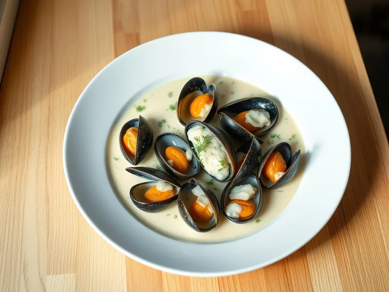

Мидии в сливочно-чесночном соусе
Очищенные мидии в соусе из сливок, чеснока и сыра
15 мин2 порц.424 ккал на порциюБ 26 · Ж 30 · У 12Европейская кухня
Открыть в приложении: порции, таймеры, список покупок
Продукты на 2 порц.
- Мидии400 г
- Сливки 20%1 стак.
- Чеснок2 зуб.
- Сливочное масло15 г
- Сыр твёрдый по желаниюпо вкусу
- Укроп по желаниюпо вкусу
- Соль2 щеп.
- Перец чёрный молотый2 щеп.
Как готовить
- Разморозьте варёно-мороженые мидии и откиньте на дуршлаг, чтобы стекла вода.
- Растопите сливочное масло на сковороде на среднем огне, обжарьте рубленый чеснок 1 минуту, не давая ему потемнеть.
- Выложите мидии и жарьте 2-3 минуты, помешивая, пока не испарится лишняя жидкость.
- Влейте сливки, посолите, поперчите и тушите на слабом огне 5 минут, пока соус не загустеет.
- Добавьте тёртый сыр, перемешайте до его расплавления и посыпьте укропом.
Совет. Мидии уже варёные, их нужно только прогреть. Долгое тушение делает их жёсткими.